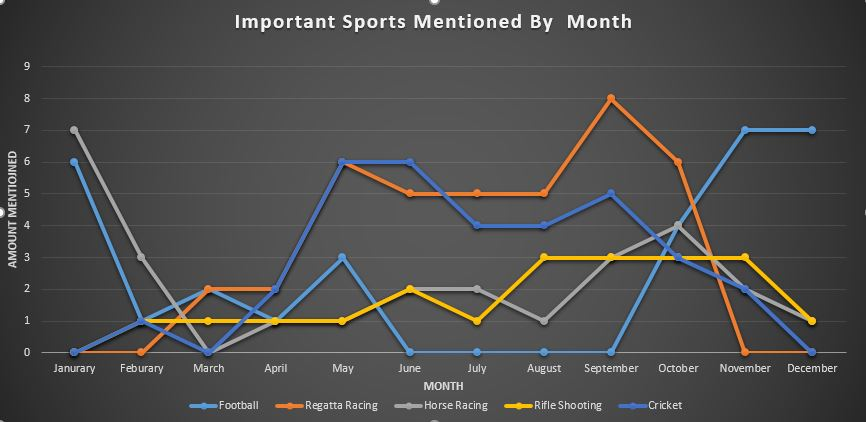
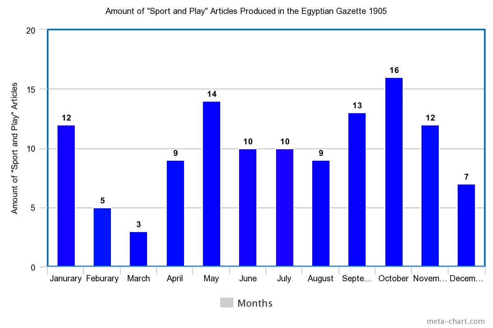
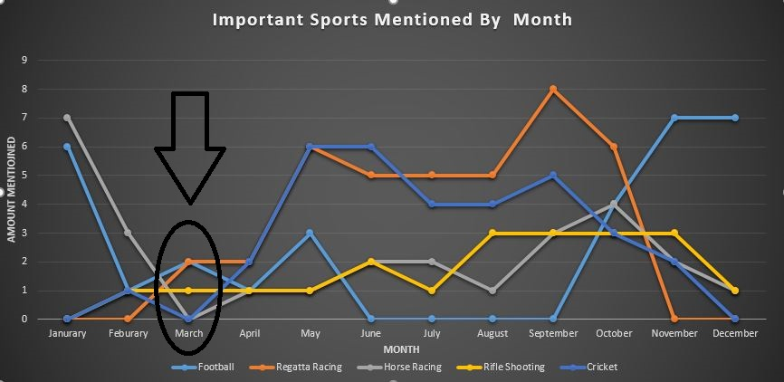
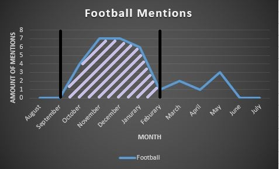
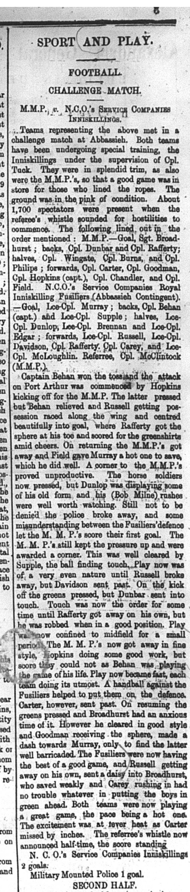
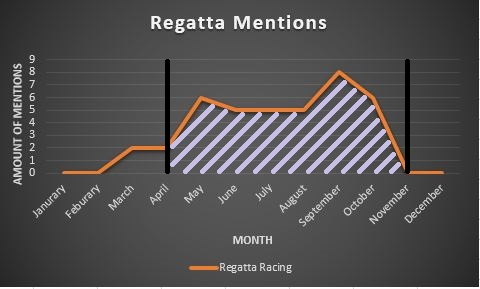

For my Analysis Project I have decided to look at the Sports happening in the editions of the Egyptian Gazette 1905-1906 and determine what the most popular season for Sports was and how the time of the year affected which sports were being reported on or not.
From reading my own pages, the ones I have put into xml formatting, I noticed the Sports section quite often and as I am particularly interested in sports myself, I always caught myself reading the articles. The sports I found to be most reported on were Football (soccer), Cricket, and Regatta Races (boat races). When thinking of an analysis project of my own I started to wonder if this really held true for the whole edition and if that’s what was most important to people at the time. I wanted to know if I was only seeing those sports and not others being reported on just because that’s what was in season or was it really the only events being held in 1905. I thought that maybe since my pages were in the February/March editions that maybe the editions in other months held very different sports being reported on.
To answer my questions, I composed and ran an X-Path Query in our repository of the Egyptian Gazette and then read the articles and see exactly what time of year the article was written and what sport it was about. The X-Path Query I ran to accomplish this task is //div[@type="page"]//head[contains(.,"SPORT AND PLAY")
The Sport and Play section was a very common article found on mostly page 3 of each day and was purely about the Sports that happened on the previous day and the outcomes of the matches/races or about upcoming big events. Returning about 108 results from this only from 1905 this was a perfect Query result. There are many infrequency in the repository though, Summer months like July are reporting 10 days’ worth of the article when March only had 3 days’ worth of content. I can’t explain why these results are so infrequent because it very well could be that the newspaper only included a limited amount of these sections per month or it could also be due to poor editing from the individuals that have not completed their assigned days yet.

After running through my results, I composed this graph shows the number of occurrences the Sport and Play article appears per month just really showing how much of a drop there is in the month of March and even in February. This has affected my results because I now must approximate the seasons of the Sports without having an even database to base my result from.
This was not the only complication in this process of trying to analyze the Egyptian Gazette. Attempting to find a Query that gave me a decent amount of feedback took a long time because of the inconsistency of the editors. I knew I wanted to look for the Sport and Play section but this section is formatted in many ways. Since query results are case sensitive there are many articles that are formatted with the casing of “Sport and Play” or “sport and play” which I have also included in these results I have found. The other problem was that some people listed this section as a p (paragraph) instead of a head (heading article) so I had to add those results in as well. The infrequencies were the thing that complicated this project and search results the most.
When reading the sections, I started to take notes on what was being reported that day and making tables and tallies for which month and which sport were being reported on. I composed a line graph showing the month being published and which sports were being reported on by amount of mentions per month; this was the first graph you saw at the top of the page. This graph though also really shows the amount of a drop every single Sport receives in the Month of March instead of how you see Football take a complete drop not stating one article between the months of June and September. Since there are many other Sports being reported on not just losing the full articles I have concluded that this time of the year must be the offseason of Football in Alexandria and Egypt in general.

This table also shows that there are what seems be seasons of sports for at least some sports. There are a few sports that seem to be reported on all year long like Horse Racing and Cricket. I included only some other sports in the table because it is already a very busy table and the data of the amount they were reported on weren’t enough to conclude if they had seasons or not. But in fact, other huge sports like Football and Regatta Racing there are huge spikes in different seasons. Since this is exactly what I was looking for I focused my main data points on these two sports. Cricket and Horse Racing are included to show that not all sports had seasons but many did in fact have them.

This graph is a real indicator that there is a specific season you can identify and what I marked with the black Lines and shaded parts underneath the graphs is what I believe is the season due to frequencies of the specific sports reporting. I believe the Football season is played from the start of October to the end of February. This would make sense because the most famous league in the world, English Premier League, today actually play their season between August-April so it has lengthened in the season but it is around the same time of the year. This is probably because they do not want these players playing in the dead heat of summer and allows the players to spend their summer season doing something else. The Football matches reported on seem to come from the league played in Alexandria and there are teams with multiple reports to them. For example, the Saint Andrew’s Football club are a very common occurrence and from what I read they seem to be a very strong team that has a popular following due to how many occurrences they have about their scores and team. The few reports that occurred that I didn’t include in the season are because these articles produced are about a different kind of Football. One article called the match they were playing a Challenge Match. It was between two military teams that were participating in it to see if the special training was successful or not.


The other sport that had a specific season that I found was the Regatta Yacht Club races. The season runs from April through the end of October, as you can clearly see on the graph. This falls well in line with Football because there isn’t too much crossing with the seasons which professional sports try not to do as much as they can so they can have all the attention focused on their leagues. It also makes sense to have the season run through the hot seasons of summer because it is in a boat race surrounded around water and perfect weather and water movements for racing. This is a very popular sport when it is in season, a lot of the articles, including the ones before I assumed the season started were reports about the upcoming races and who is competing. There wouldn’t be so much coverage on this sporting event if it wasn’t popular with the city of Alexandria. I assumed this season because of the number of articles and then also just the time of year because thinking about it logically they wouldn’t be competing during Winter in boat races, that just wouldn’t work.
In conclusion, through my XPath query results I have found that some of the most popular Sports in Alexandria 1905 did in fact have seasons that seem in line with the season timing of modern day sports. Though some sports didn’t have clear seasons that I could read in the data that doesn’t mean they didn’t exist. Sports like Horse Racing and Cricket though didn’t have a pattern that I could clearly read either and they seemed to be all year events; this could be the actual case or it could be reports on different leagues around the world. It is very interesting to see the sports that were being reported on to see what sports matter to the population and how the timing of months in the year affected what the readers of the Egyptian Gazette wanted to read.